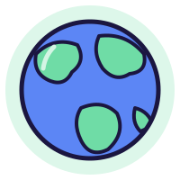
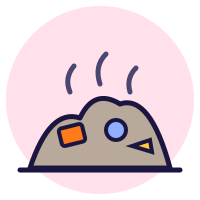
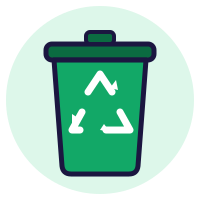
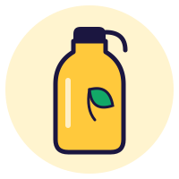
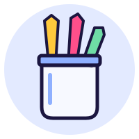

Lo sviluppo sostenibile

Noi oggi Chi verrà domani«Uno sviluppo in grado di soddisfare i bisogni delle generazioni attuali senza compromettere la possibilità che le generazioni future riescano a soddisfare i propri.»
Rapporto Brundtland, 1987. Gro Harlem Brundtland, politica norvegese, presidente della Commissione mondiale ONU su Ambiente e Sviluppo, presentò la relazione «Our common future» (Il futuro di tutti noi).
Tre tipi di sostenibilità
Tocca un cerchio: dove si incontrano tutti e tre, l'impresa è davvero sostenibile.
Sostenibilità {{susTitle}}
{{susDef}}
L'azienda deve:
✓{{l}}
Economia lineare o circolare?

Gli scarti non vengono riutilizzati ma smaltiti come rifiuti e finiscono in discarica. Problemi:
Le discariche occupano grandi superfici tolte ad altri usi.
Inquinamento: i rifiuti rilasciano sostanze nocive nell'aria e nel terreno.
Nel tempo si altera l'ecosistema, anche tramite animali e insetti.
Produci
Usa
Recupera

L'economia circolare punta a una crescita sostenibile organizzando la produzione per:
allungare la vita utile dei prodotti
ridurre al minimo i rifiuti
usare risorse rinnovabili
Il modello delle 3R
Punti: {{rScore}} / {{rTotal}}
Ridurreusare una minore quantità di risorse
Riutilizzarerecuperare e usare di nuovo prodotti e componentiRiciclaretrasformare gli scarti in nuovi materiali (materia prima secondaria)
{{g.text}}
Le relazioni tra azienda e ambiente
Ambiente generale:
fisico-naturale
economico generale
socioculturale
tecnologico
politico-legislativo
Ambiente specifico: gli stakeholder, cioè i soggetti interni ed esterni che hanno rapporti con l'azienda. Tocca uno stakeholder per vedere che cosa si scambiano.
←L'azienda riceve: {{shIn}}
→L'azienda dà: {{shOut}}